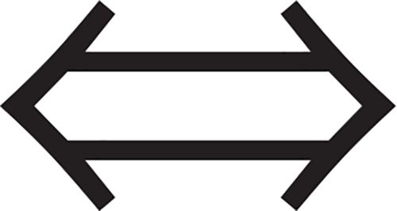

COMPLEXITY ECONOMICSWe have so far focused on introducing complexity economics, providing some motivation and a few examples. It may seem that complexity economics is just common sense – it follows a literal, bottom-up approach to modeling the economy that is used in many other fields of science. If you are not an economist, you may be thinking, ‘What’s the big deal? This seems like the obvious way to do things.’ If you are an economist, however, you will recognize that complexity economics is heresy – it violates principles that have been the foundation of the field of economics for more than a century. To put things in perspective, we will now briefly discuss how standard economic theory works.